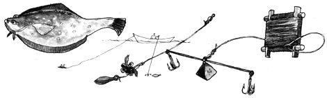
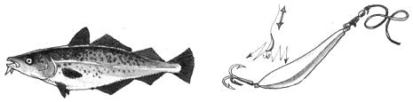
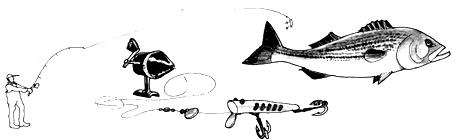
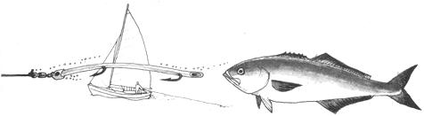
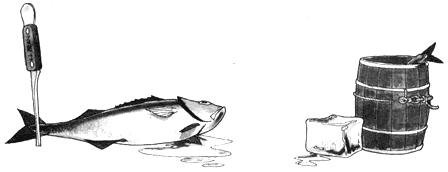

a SERIOUS FISHERMAN gathers food for market and for his table. He is neither an idle angler nor a blood sportsman, but a practical man bartering skill for food. There are few hard rules in fishing; techniques change with the days of the season, with currents and water temperature. There are some generalities, however, that can serve if local knowledge and current usage support them.
BOTTOM FISHING flounder, fluke, cod, tautog.
drifting free or slowed by a small anchor (a "lunch hook"), the bottom fisher drops a weight and single hook , or a gang rig with treble hooks, and baits it with clams or sea worms.
jigging is a technique used by fishermen who know where the schools are the bright treble hooks ad weight are jerked up and down, attracting fish and foul-hooking as many fish as are fair-hooked
JIGGING cod, haddok, halibut
CASTING bass, bluefish
from a distance, the spasmodic jerking of the plug caster is unmistakeable. He wades or motors to the schools with a spinning or casting rig and an array of lures that look as if no self-respecting fish would touch them.
TROLLING bass, bluefish, tuna, marlin, swordfish
fishermen troll for fish big and vicious enough to attack a good-size lure (surgical tubes, buck-tails, rag-maps or whatever the fish are admiring) moving through the water at 3 or 4 knots. they glass the horizon for gulls working schools of baitfish driven flashing to the surface by circling packs of predators.
SMALLER FISH are of little market value, but sport fish and larger fish-blues, bass, halibut, haddock, swordfish-have a definite value at the fish house if they are handled well. they should be gutted quickly-especially haddock and cod-and iced down in fish boxes or kept in iced brine.
|
 |
 |
 |
|
 |
 |
|